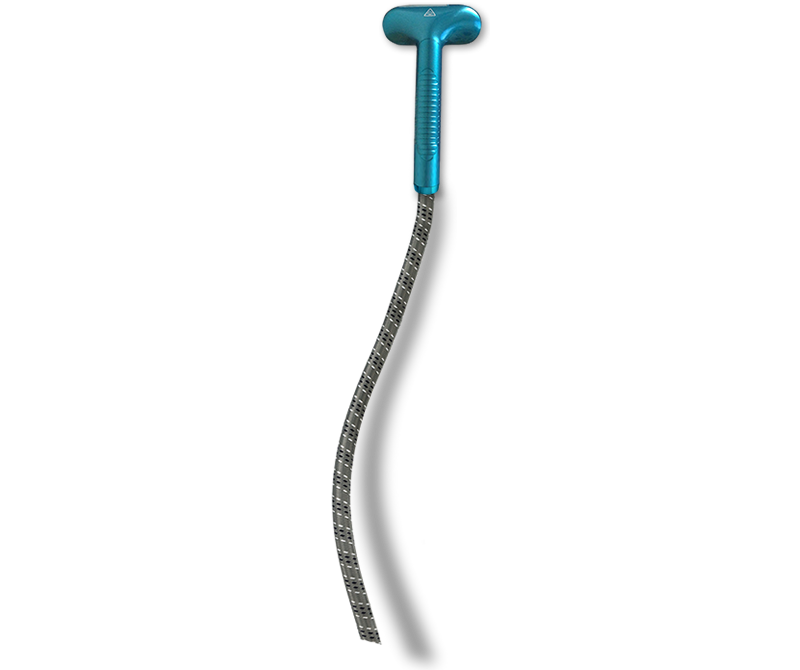
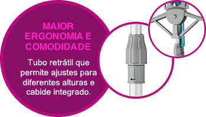

Vaporizador de Roupas Electrolux GST10
Mais Cuidado para passar suas roupas a limpo
Vaporizador de Roupas Electrolux GST10.
Desamassa e higieniza.
Agora, cuidar das suas roupas Ficou bem mais fácil.
O Vaporizador de Roupas GST10 da Electrolux ajuda você a cuidar das suas roupas com muito mais praticidade e higiene.
Com um poderoso jato de vapor, ele desamassa, renova e higieniza suas roupas direto no cabide, e pode ser usado até nos tecidos mais difíceis de passar, como bordados, pedrarias e estampas.
Experimente esse jeito prático de ter suas roupas passadas e higienizadas.
Mais Prático
Pronto para usar em apenas 60 seg.

Mais Potente
Jato de vapor poderoso
Até 35 gramas por minuto, ideal para tecidos grossos.
Mais Versátil
3 níveis de vapor para cada tipo de tecido. Alto desempenho até nos tecidos mais delicados.
Grande Capacidade
Reservatório removível com capacidade de 2,1L e autonomia de 1h.


Já vem com acessórios para fazer vincos em mangas e colarinhos, escova para pelos e luva de proteção.
Assista ao vídeo do produto
Muito mais praticidade e higiene.
- Embalagem
- 1 Vaporizador de Roupas
Electrolux GST10 - 1 Escova para pelos
- 1 Acessório para fazer vincos
- 1 Luva de proteção
- Manual de Instruções
- Garantia do produto
- Especificações
Técnicas - Altura: 935mm - 1635mm (ajustável)
- Largura: 246mm
- Profundidade: 380mm
- Peso líquido: 5,25kg
- Peso bruto: 6,69kg
- Capacidade do reservatório: 2,1L
- Níveis de potência: 3
- Voltagem: 127v e 220v